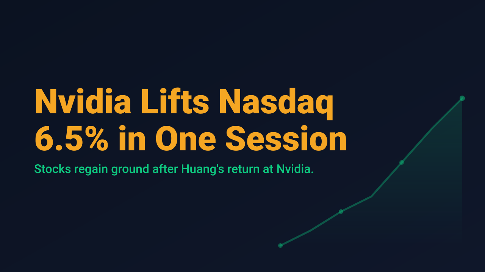
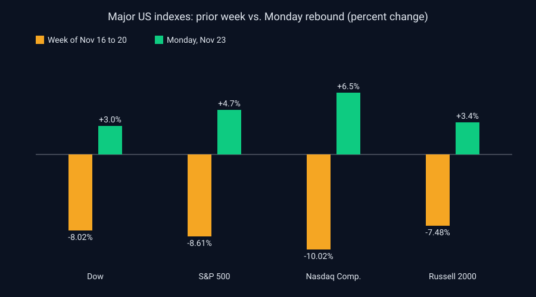

Nvidia Lifts Nasdaq 6.5% in One Session

The S&P 500 rose 326.78 points, or 4.7%, to 7,237.17 on Monday, according to the Associated Press. The Dow Jones Industrial Average gained 1,447.98 points, or 3%, to 49,595.31, and the Nasdaq composite advanced 1,471.82 points, or 6.5%, to 24,089.56. The Russell 2000 rose 3.4% to 2,669.66. Nvidia led the advance after its board reinstated Jensen Huang as president, CEO and director, less than two weeks after he resigned. In midafternoon trading, at about 1:57 p.m. ET, Nvidia shares were quoted at $163.94, up 30.6%, an intraday figure rather than a closing price.
The size of the move is best read against the damage that preceded it. For the week of November 16 to 20, TradingKey reported that the S&P 500 fell 8.61% to 6,910.39, the Nasdaq composite fell 10.02%, the Dow fell 8.02% and the Russell 2000 fell 7.48%, while the VIX closed the week at 35.89. Monday's gains recovered a portion of those losses, not all of them. For a swing trader, a single session of this magnitude resets short-term levels but does not by itself establish a new trend.
Positioning appears to have amplified the rebound. As reported by Beinsure, Nomura warned that forced short covering and options-related buying may be magnifying the move, and strategist Charlie McElligott said much of it was mechanical, driven by short covering and dealer hedge adjustments. Ahead of the reversal, sentiment in Nvidia options had leaned defensive: a Cboe note dated November 16 showed retail put buying at 32% of NVDA opening trades on Cboe exchanges on a recent Thursday, more than 10 points above the 21% year-to-date average, with options implying an 8% one-day earnings move against an average realized move of 4.8% over the past four quarters.

The macro backdrop has not changed. Beinsure reported that markets expect a rate increase at the December 9 FOMC meeting, with Polymarket near 91% and bond-market pricing near 92%, and that Governor Lisa Cook said on Friday that delaying further hikes risks getting behind the curve. Goldman Sachs strategists listed three conditions for a sustained recovery: confidence in AI-related earnings, better macro conditions including a more accommodative Fed, and a large drop in investor positioning.
Markets close Thursday, November 26, for Thanksgiving, and Friday's session ends at 1 p.m. ET, so liquidity will be thinner than usual. After a week of heavy losses and a session of sharp gains, the evidence so far supports caution on position size rather than conviction on direction.